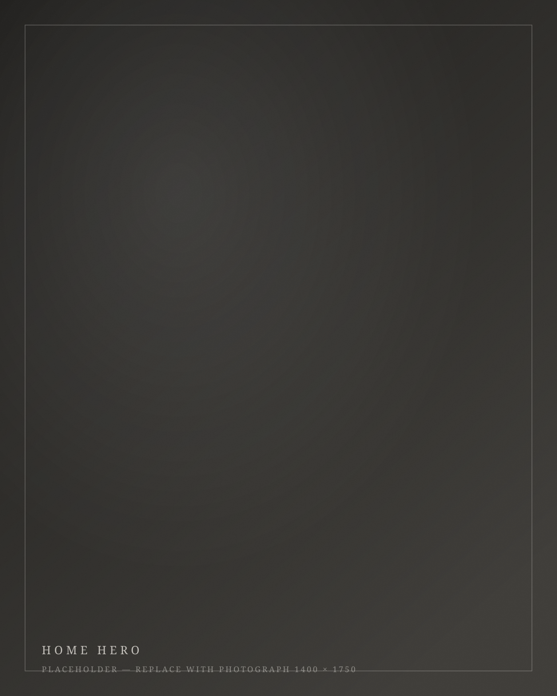
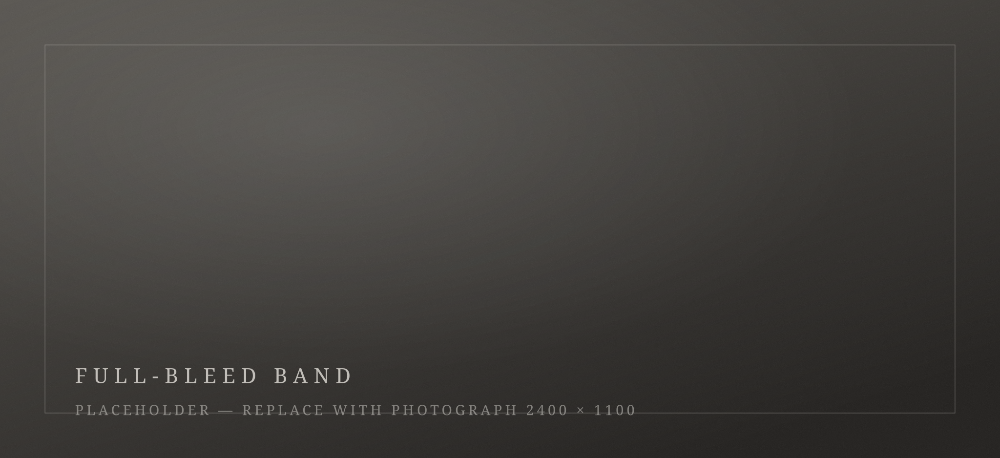

Riband Saadallah · Photographer · Erbil
Photographs that outlive the day.
Twelve years photographing the streets of Helsinki taught me patience, honesty, and shadow. I bring that eye to weddings and portraits in Erbil — quiet, deliberate, made to last.

Services
What I photograph

Weddings
One wedding at a time, photographed like a story — unposed, unhurried, edited to last. In colour, and in the black-and-white signature.
Weddings in Erbil 02
Portraits
Individuals, couples, and families — in the studio, on the street, or in the light you love. Portraits with weight.
Portrait sessions 03
Schools
A yearly photography programme for schools in Erbil — class groups, individual portraits, and simple ordering for parents.
The school programme
Colour shows how it looked. Black and white shows how it felt.
About Riband
The photographer
From Helsinki to Hewlêr.
Finland taught me to wait for the light, respect the quiet, and keep only what is true. I came home to photograph Erbil the same way — honestly, beautifully, without noise.
Now booking
The 2026–27 wedding calendar is open.
Dates go to whoever confirms first — autumn weekends leave earliest. Tell me about your day, and I'll tell you honestly if I'm the right photographer for it.